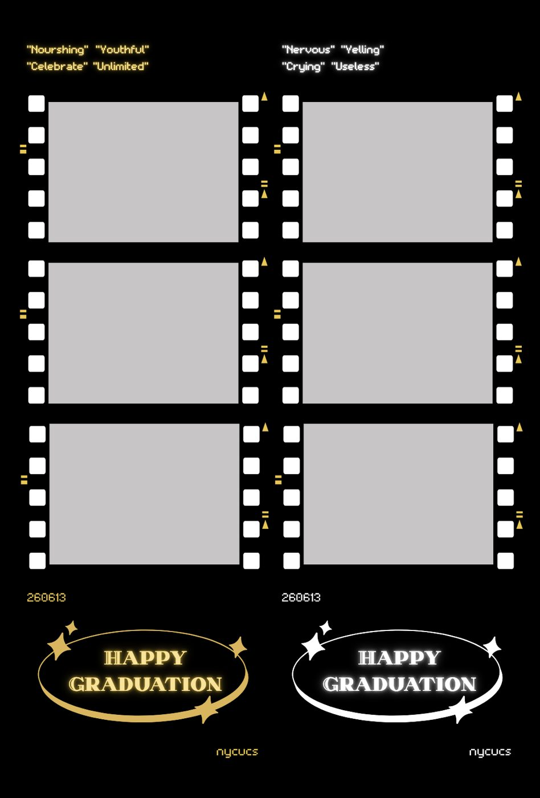
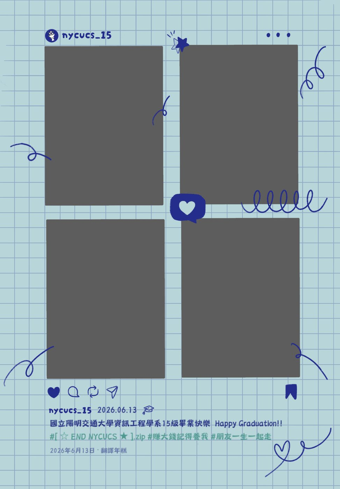
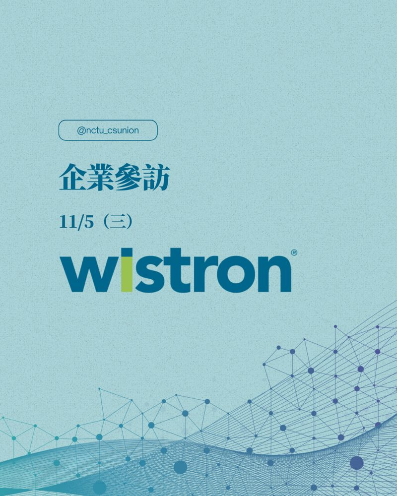
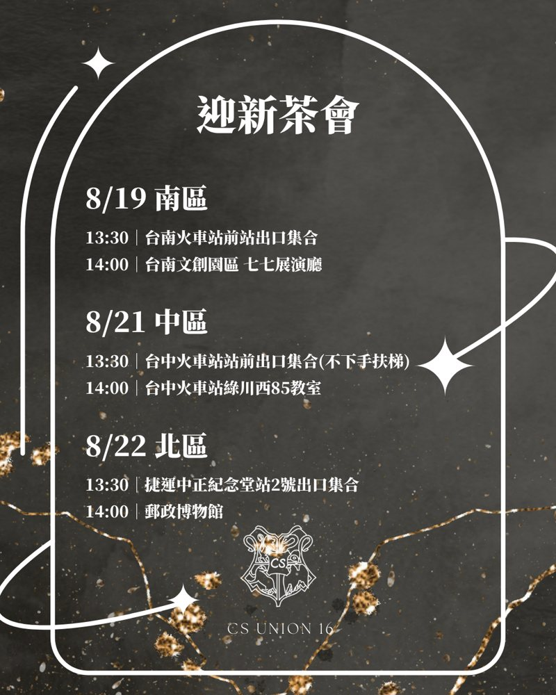
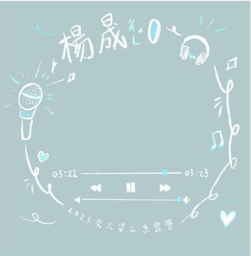

底片款兩條膠卷上的標語，字首都拼出 NYCU：一邊是「Nourishing、Youthful、Celebrate、Unlimited」，另一邊是「Nervous、Yelling、Crying、Useless」，是資工系四年的兩面。
系上活動的拍貼框、貼文與頭貼框。
擔任資工系學會、系露營美宣長，和另一位美宣長一起負責系上活動的視覺。每件都要在很小的版面裡，讓人一眼看懂活動是什麼。


底片款兩條膠卷上的標語，字首都拼出 NYCU：一邊是「Nourishing、Youthful、Celebrate、Unlimited」，另一邊是「Nervous、Yelling、Crying、Useless」，是資工系四年的兩面。


